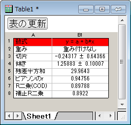
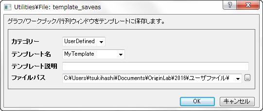
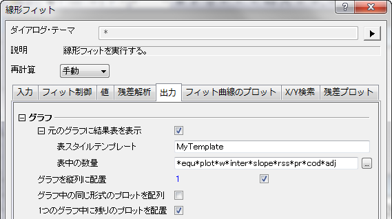
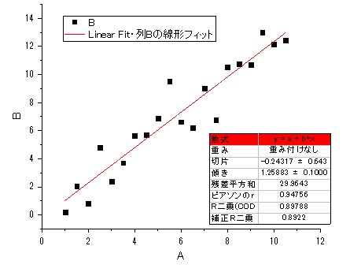
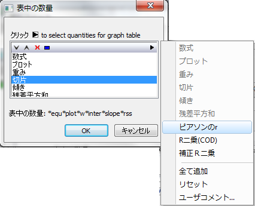
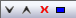
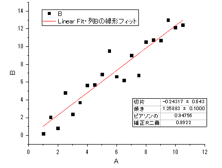
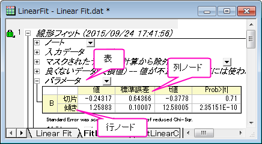
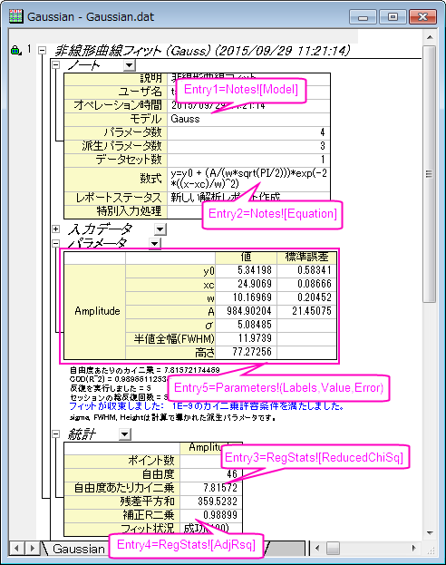
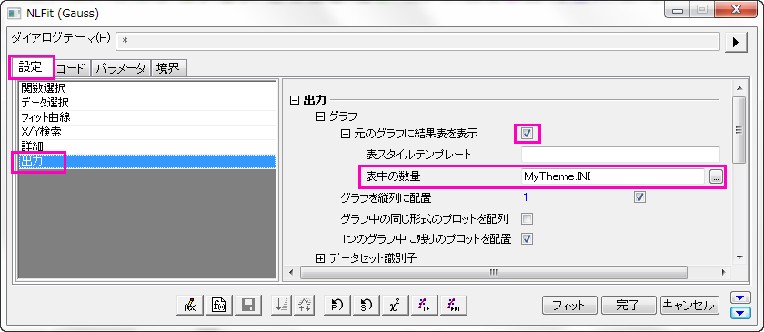

表スタイルテンプレートと表中の値の編集
FitRef-CustomReportTable
グラフウィンドウからフィットするとき、結果テーブルを元のグラフに貼り付けるかどうかを決めるだけでなく、「表スタイルテンプレート」でワークシートテンプレートを指定して表のフォーマットを編集したり、「表中の値」でINIファイルを指定してテーブルの内容を編集することができます。
表スタイルテンプレート
レポートテーブルは組込のワークブックテンプレートで作成されます。通常のワークシートの操作と同様に、フォント、背景、色などのワークシートスタイルをカスタマイズできます。このワークシートをテンプレートして保存し、表作成編集ボックスでテンプレートを指定できます。
例：
- \Samples\Curve Fitting\Linear Fit.datファイルをインポートした後、B列にを選択して、散布図を作成します。
- グラフをアクティブにして、解析：フィット：線形フィットと選び、 線形フィットダイアログを出します。デフォルトのまま、OKボタンをクリックします。結果の表は、元のグラフに貼り付けられます。
- 表をダブルクリックして、ワークシートとして開きます。最初の行の背景の色を赤に設定します。
- 
- メニューからファイル：テンプレートの新規保存を選びます。MyTemplateと名前を付けて、保存します。
- 
- 元のデータワークシートに戻ります。C列を選択して、散布図を作成します。
- グラフをアクティブにして、線形フィットダイアログを再度開きます。出力タブで、グラフ:元のグラフに結果表を表示の項目を開いて、 表スタイルテンプレート編集ボックスに 「MyTemplate」と入力します。
- 
- OKボタンをクリックして、フィットを実行します。結果グラフのレポート表の最初の行が赤くなっているのが分かります。つまり、ユーザ定義のテンプレートを使って、グラフ上の表が作成されました。
- 
表中の値
グラフの表に表示する項目を変更する方法は、2つあります。
- 「表中の値」ダイアログを使う
- *.iniファイルを編集します。この方法を使う場合、表中の値ボックスに 「iniファイル名」を入力します。
「表中の値」ダイアログ

このダイアログは、表中の値の隣にある をクリックして開きます。右側のフライアウトメニューから選択して、グラフ表に値を追加/削除します。ボタンをクリックして、値の順番の並び替え、削除、選択を行うことも可能です。OKを選択後、表の内容を示す文字列が編集ボックスに作成されます。以下のチュートリアルでは、グラフ上に線形回帰レポート表を作成する方法を説明しています。
 |
- 新しいワークブックを開き、\Samples\Curve Fitting\Linear Fit.datファイルをインポートします。
- 2列目をクリックして選択した後にメニューから操作を行います。作図：シンボル図：散布図と選び、散布図を作成します。
- グラフをアクティブにしたうえで次の操作を行います。解析：フィット：線形フィットと選び、線形フィットダイアログを出します。
- フィット制御タブの図上値によるフィットのチェックを外します。
- ダイアログの出力タブで、グラフ-> 元のグラフに結果表を表示の順に開きます。表の値の隣にある、ボタンをクリックして、表の値ダイアログを開きます。CTRLを押しながら、リストから数式、プロット、重み、残差平方和、R二乗(COD)を選択し、をクリックして、削除します。残りの項目がグラフ中に表示されます。OKをクリックして適用します。
- OKをクリックして、線形フィットダイアログを閉じます。結果のグラフは、下図と同様になります。
- 
|
INIファイルを編集して、表中の数をカスタマイズ
Originでは、\CustomTable フォルダにある、「INIファイル」として保存したテーマを使って、表の内容を指定します。新規テーマを作成したい場合、新しいINIファイルを作成しした後、\CustomTableフォルダに保存し、「表の値」編集ボックスにあるこのINIファイルを指定します。
レポートツリーの値を示す方法
レポートテーブルの内容は、レポートワークシートにリンクしており、レポートワークシートはツリー構造で管理されており、次のようにINIファイル内のツリーノードを指定することができます。
- TableName!ColumnNodeName[RowNodeName]
- 
例えば、次の曲線の傾き値は次のように記述できます。
- Parameters!Value[Slope]
ノード名はレポートワークシートで使われる名前とは異なっています。次のノード名を参照してください。
ノード項目名
ノート表(Notes)
| 列/行 |
項目名 |
|
説明
ユーザ名
オペレーション時間
モデル
数式
レポートステータス
|
Description
UserName
Time
Model
Equation
AutoUpdateMode
|
入力データ表(Input)
(ここで、nは、n番目の行/列)
パラメータ表(Parameters)
| 列/行 |
項目名 |
|
値
固定
標準誤差
t値
Prob>|t|
LCL
UCL
依存度
CI 半幅
下限
上限
|
Value
Fix
Error
tValue
Prob
LCL
UCL
Dependency
ConfInterval
LowerBound
UpperBound
|
統計表 (RegStats)
| 列/行 |
項目名 |
|
ポイント数
自由度
自由度あたりのカイ二乗
残差平方和
R値
R二乗 (COD)
補正R二乗
Root-MSE (SD)
反復回数
フィット状況
|
N
DOF
ReducedChiSq
SSR
Rvalue
RSqCOD
AdjRSq
RMSESD
NumIter
FitStatus
|
概要表 (Summary)
ANOVAテーブル (ANOVAs)
| 列/行 |
項目名 |
|
DF
平方和
二乗平均
F 値
Prob>F
回帰
残差
未補正合計
補正合計
|
DOF
SSq
MeanSq
FValue
PValue
RegressionN
ResidualN
UCTotalN
CTotalN
|
(Note:Nは、n番目のANOVA表を意味します。)
INIファイルの作成
- テーマファイルは標準的なINIファイルのような内容で、次のセクションで開始されます。
-
- [SectionName]
- 行に続き、以下の項目があります。
- name=value
- この形式で項目数分入力されています。[DataLinks]という名前を持つセクションのみに対してサポートされます。セミコロン(;)で始まる行は、コメント行です。
- すべての入力項目は、数字付きの「Entry」という文字で始まります。数字は、テーマでの上からの入力項目の順番です。テーマがカスタムテーブルに適用されると、1つの入力項目は1行以上の結果になります。ですから、例えば、2つの入力項目Enrty1とEntry2がある場合、Entry1はカスタムテーブルに3行作成し、カスタムテーブルのEntry2は4行目から開始します。
- 各入力値は、スペースで区切られた0または複数の項目で構成されます。テーマがカスタムテーブルに適用されると、項目は左から右へ(連続した列)現れます。入力項目が空白の場合(例えば項目がない)、テーマが適用されると、空白行になります。
- 各項目はいくつかの部分で構成されます。この部分は、いくつかの別のテーブルにリンクして参照するレポートツリーのノード名またはセルの中に入力される文字列にすることができます。項目にスペースがある場合、クォーテーションマークで囲みます。
- 項目にリンクがある場合、通常次のようになります。
-
- TableName!ColumnNodeName[RowNodeName]
- 各リンク項目は、テーブルを表すレポートツリー内のノード名で始まる必要があります。RowNodeName は、TableNameテーブルで1行を生成するノード名を表します (ノード名がブラケット内にあるということから、行を表しています。)ColumnNodeNameは、TableName テーブル内の列のノードの名前を表しています。テーマとしてカスタムテーブルを適用するとき、上記リンクはリンクを1つのセルにします。セルは TableNameテーブル、RowNodeName行、 ColumnNodeName列にあります。例えば、
- Parameters!Value[P1]
- は、Parameters テーブル内の最初のパラメータの値にリンクします。
- 同じテーブルのいくつかの列は組み合わされ、1つのリンクになります。例えば、
-
- Parameters!(Value,Error)[P1]
- は、隣り合う2つのセルを作成しますParameters テーブル内の最初のパラメータの値セルと誤差セルへのリンクです。
- 行または列のノードが省略されている場合、結果は全体の他の次数にリンクされます。例えば、
-
- Parameters!Value
- は、列値全体へのリンクを作成し、
- Parameters![P1]
- は、Parameters テーブル内の最初のパラメータの行全体にリンクします。
- 行または列のノードが省略され、テーブルノード名だけが存在する場合、テーブル全体へのリンクが作成されます。例えば、
-
- Parameters!
- は、Parameters テーブル全体にリンクします。
- 特殊なキーワード -- Labelsがあります。これは、ラベルにリンクしている次数を生成します。例えば、
-
- RegStats![Labels]
- は、RegStats.テーブルの列ラベルを生成します。かつ
- Parameters!Labels[P1]
サンプル
メモ帳で、\CustomTable\FitNL.INIを開き、非線形フィットに対するデフォルトの出力テーブルを確認します。
- [DataLinks]
- Entry1=Notes![Model]
Entry2=Notes![Equation]
Entry3=RegStats![ReducedChiSq]
Entry4=RegStats![AdjRsq]
Entry5=Parameters!(Labels,Value,Error)
これは、レポートワークシートの次のテーブルを表します。
- 
グラフテーブルのANOVA表のp値を取得するには、ファイルを次のように修正します。
- [DataLinks]
- Entry1=Notes![Equation]
Entry2=RegStats![AdjRsq]
Entry3="Model P Value" ANOVAs!PValue[Regression1]
Entry4=Parameters!(Labels,Value,Error)
ユーザファイルフォルダにCustomTableというフォルダを作成します。Originは、最初にユーザファイルフォルダの設定 (.INIファイル) を使います。.INIファイルを、新しく作成したフォルダCustomTable にMyTheme.INI という名前で保存します。このテーマを使うには、 出力:設定：元のグラフに結果表を貼り付け：表の値編集ボックスを使います。
- 